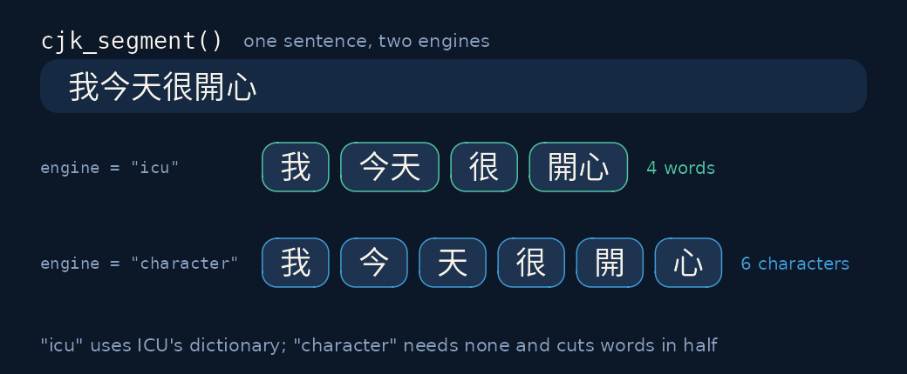
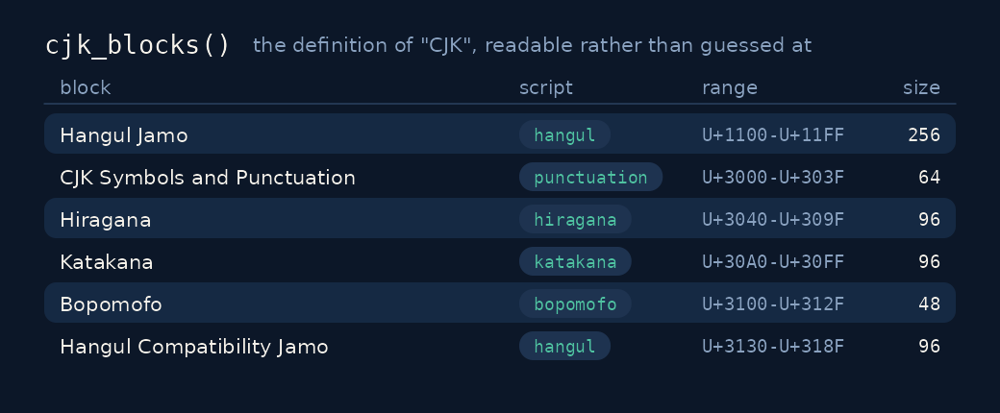

Every image below is generated, and the scripts sit beside them in
data-raw/: make-figures.R for the panels, and
make-hero.R with merge-hero.py for the
animation at the top. All of them call the package to lay themselves out
— the terminal grids are positioned by cjk_width() — so a
figure cannot drift from what the functions actually return.
Width is not character count

nchar() counts characters. A terminal counts columns,
and a CJK character takes two of them. That single mismatch is why CJK
tables print ragged.
labels <- c("中文", "abcd", "日本語")
nchar(labels)
#> [1] 2 4 3
cjk_width(labels)
#> [1] 4 4 6
cat(paste0("|", cjk_pad(labels, 8), "|"), sep = "\n")
#> |中文 |
#> |abcd |
#> |日本語 |Truncation follows the same rule — a cut at eight columns, not eight characters:
cjk_truncate("我今天很開心", 8)
#> [1] "我今..."Which script, which language

txt <- c("我今天很開心", "こんにちは", "안녕하세요", "東京都", "no CJK here")
cjk_script(txt)
#> [1] "han" "hiragana" "hangul" "han" NA
cjk_detect_language(txt)
#> [1] NA "japanese" "korean" NA NARows one, four and five come back NA. Row five is
uninteresting – it has no CJK in it at all. Rows one and four are the
point: both are written entirely in Han characters, and nothing in the
script separates Japanese from Chinese there. A library that answers
"chinese" is guessing, and it will be wrong on Japanese
input in a way you cannot detect downstream. Opt in if you want it:
cjk_detect_language(txt, han_only = "chinese")
#> [1] "chinese" "japanese" "korean" "chinese" NAHow much of it is CJK

cjk_ratio(c("我今天很開心", "hello 中文 world", "東京都 2024", "no CJK here"))
#> [1] 1.0000000 0.1428571 0.3750000 0.0000000The denominator is every code point, spaces and Latin punctuation included. At the column level:
posts <- data.frame(id = 1:5, text = txt)
cjk_summary(posts, text)
#> # A tibble: 1 × 4
#> n_docs n_with_cjk prop_with_cjk mean_ratio
#> <int> <int> <dbl> <dbl>
#> 1 5 4 0.8 0.8
cjk_char_counts(posts, text)
#> # A tibble: 19 × 5
#> char codepoint script block n
#> <chr> <int> <chr> <chr> <int>
#> 1 我 25105 han CJK Unified Ideographs 1
#> 2 今 20170 han CJK Unified Ideographs 1
#> 3 天 22825 han CJK Unified Ideographs 1
#> 4 很 24456 han CJK Unified Ideographs 1
#> 5 開 38283 han CJK Unified Ideographs 1
#> 6 心 24515 han CJK Unified Ideographs 1
#> 7 こ 12371 hiragana Hiragana 1
#> 8 ん 12435 hiragana Hiragana 1
#> 9 に 12395 hiragana Hiragana 1
#> 10 ち 12385 hiragana Hiragana 1
#> 11 は 12399 hiragana Hiragana 1
#> 12 안 50504 hangul Hangul Syllables 1
#> 13 녕 45397 hangul Hangul Syllables 1
#> 14 하 54616 hangul Hangul Syllables 1
#> 15 세 49464 hangul Hangul Syllables 1
#> 16 요 50836 hangul Hangul Syllables 1
#> 17 東 26481 han CJK Unified Ideographs 1
#> 18 京 20140 han CJK Unified Ideographs 1
#> 19 都 37117 han CJK Unified Ideographs 1Segmentation

"icu" is a real word segmenter — ICU’s dictionary-based
break iterators, shipped inside stringi:
cjk_segment("我今天很開心", engine = "icu")
#> [[1]]
#> [1] "我" "今天" "很" "開心"
cjk_segment("今日は良い天気ですね", engine = "icu", locale = "ja")
#> [[1]]
#> [1] "今日" "は" "良い" "天気" "です" "ね""character" is the dictionary-free baseline, and the
contrast is the reason segmenters exist:
cjk_segment("我今天很開心", engine = "character")
#> [[1]]
#> [1] "我" "今" "天" "很" "開" "心"
cjk_tokens(posts[1:2, ], text, engine = "icu")
#> # A tibble: 5 × 3
#> id text token
#> <int> <chr> <chr>
#> 1 1 我今天很開心 我
#> 2 1 我今天很開心 今天
#> 3 1 我今天很開心 很
#> 4 1 我今天很開心 開心
#> 5 2 こんにちは こんにちはengine is still required because
"character" answers a different question and would
otherwise be the answer you got by accident. Note that
locale does not pick the dictionary: ICU applies
one combined Chinese–Japanese word list to Han and kana runs, chosen by
the script of the text, so the two calls above segment the same way
under any locale.
cjk_segmenters()
#> [1] "character" "icu"Wrapping
cjk_wrap() completes the layout set. Break positions
follow the Unicode line breaking algorithm, so no line begins with
。 or ）:
Sentences, n-grams and cleaning
A regular expression on [.!?] finds no sentence boundary
in Chinese: the terminator is 。. Character bigrams are the
dictionary-free baseline for Chinese retrieval, and punctuation has to
come out first or it ends up inside a token.
cjk_sentences("我今天很開心。你呢？天氣很好！")
#> [[1]]
#> [1] "我今天很開心。" "你呢？" "天氣很好！"
cjk_ngrams("中文很好")
#> [[1]]
#> [1] "中文" "文很" "很好"cjk_strip_punct() removes punctuation by Unicode
category rather than by [[:punct:]], which resolves through
the C library and so removes nothing under LC_ALL=C — and
nothing at all from CJK when perl = TRUE. The default
replaces each mark with a space, so a bigram cannot span a full
stop:
cjk_strip_punct("他說（今天）。真好")
#> [1] "他說 今天 真好"
cjk_ngrams(cjk_strip_punct("好。天")) # nothing spans the stop
#> [[1]]
#> character(0)
cjk_ngrams(cjk_strip_punct("好。天", "")) # deleting it invents 好天
#> [[1]]
#> [1] "好天"It keeps ー, the prolonged sound mark, which is a
modifier letter rather than a dash and carries the long vowel in most
Japanese loanwords:
cjk_strip_punct("コーヒー、ラーメン")
#> [1] "コーヒー ラーメン"Sorting
sort() reads LC_COLLATE, so the order it
gives Han depends on the machine: code point order under C,
pinyin under zh_CN.utf8, something else again under
ja_JP.utf8. Naming a collation makes the answer the same
everywhere.
Normalisation
Two strings can render identically and still differ as data.
cjk_normalize() is the Unicode forms, and the surprise is
that plain "nfc" is not a no-op on Han — compatibility
ideographs have singleton canonical mappings, so it rewrites them
exactly as "nfkc" does.
ga <- c("\u304c", "\u304b\u3099") # composed, then KA + voiced mark
nchar(ga)
#> [1] 1 2
nchar(cjk_normalize(ga))
#> [1] 1 1
cjk_normalize("ＡＢ ①", form = "nfkc")
#> [1] "AB 1"
block <- vapply(c(0xF900:0xFA6D, 0xFA70:0xFAD9), intToUtf8, character(1))
sum(cjk_normalize(block, "nfc") != block) # folded away by plain NFC
#> [1] 460
sum(cjk_normalize(block, "nfc") == block) # and the survivors
#> [1] 12Variation selectors survive every form but
"nfkc_casefold", and are dropped before the form is applied
rather than after:
ivs <- "辻\U000E0100"
nchar(cjk_normalize(ivs))
#> [1] 2
nchar(cjk_normalize(ivs, drop_variation_selectors = TRUE))
#> [1] 1Romanisation, script and kana
Kana conversion is a normalisation, the jamo round trip returns NFC,
Han conversion resolves ambiguity from context but not regional
vocabulary, and romanisation reads all Han as Chinese.
vignette("transliteration") is explicit about each.
cjk_romanize("中文")
#> [1] "zhōng wén"
cjk_romanize("中文", ascii = TRUE)
#> [1] "zhong wen"
cjk_simplify("漢字")
#> [1] "汉字"
cjk_traditionalize("汉字")
#> [1] "漢字"
to_hiragana("カタカナ")
#> [1] "かたかな"
to_katakana("ｶﾞ") # halfwidth in, composed out
#> [1] "ガ"
cjk_jamo("한글")
#> [[1]]
#> [1] "ᄒ" "ᅡ" "ᆫ" "ᄀ" "ᅳ" "ᆯ"Where they break, stated plainly:
cjk_traditionalize("软件") # characters right, Taiwanese word (軟體) wrong
#> [1] "軟件"
cjk_romanize("日本語") # Han read as Chinese, not nihongo
#> [1] "rì běn yǔ"Width forms

to_halfwidth("１２３")
#> [1] "123"
as.numeric(to_halfwidth("１２３"))
#> [1] 123
# NFKC would rewrite all three of these; to_halfwidth leaves them alone
to_halfwidth("½ Ⅸ ①")
#> [1] "½ Ⅸ ①"
# halfwidth katakana: two code points composed into one
x <- "ｶﾞ"
nchar(x)
#> [1] 2
nchar(to_halfwidth(x))
#> [1] 1
to_halfwidth(x) == "ガ"
#> [1] TRUEThe block table

head(cjk_blocks(), 10)
#> # A tibble: 10 × 5
#> block script start end n_codepoints
#> <chr> <chr> <int> <int> <int>
#> 1 Hangul Jamo hangul 4352 4607 256
#> 2 CJK Symbols and Punctuation punctuation 12288 12351 64
#> 3 Hiragana hiragana 12352 12447 96
#> 4 Katakana katakana 12448 12543 96
#> 5 Bopomofo bopomofo 12544 12591 48
#> 6 Hangul Compatibility Jamo hangul 12592 12687 96
#> 7 Kanbun kanbun 12688 12703 16
#> 8 Bopomofo Extended bopomofo 12704 12735 32
#> 9 Katakana Phonetic Extensions katakana 12784 12799 16
#> 10 CJK Unified Ideographs Extension A han 13312 19903 6592
nrow(cjk_blocks())
#> [1] 27